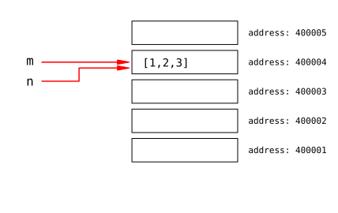

Mutable vs. immutable objects
Two examples
Objects used in Python can be separated into two major categories: some objects are mutable while other objects are immutable. The difference between these categories is illustrated by the following two examples.
Example 1. In the code below we assign a variable m to the
integer 2, and set n equal to m. In effect both of these
variables have value 2:
m = 2
n = m
print('m={}'.format(m))
print('n={}'.format(n))
m=2 n=2
When we change the value of n the value of m is not affected,
it is still 2:
n += 1
print('m={}'.format(m))
print('n={}'.format(n))
m=2 n=3
Example 2. Here we perform the same operations as in above, but we assign to the first variable a list and then make the second variable equal to the first one. Again the result is that these variables have the same value:
m = [1, 2, 3]
n = m
print('m = {}'.format(m))
print('n = {}'.format(n))
m = [1, 2, 3] n = [1, 2, 3]
Next, we modify the value of n by changing the first element of the
list:
n[0] = 100
print('m = {}'.format(m))
print('n = {}'.format(n))
m = [100, 2, 3] n = [100, 2, 3]
The value of n changed as expected, but value of m changed as
well even though we did not use this variable.
The difference in the behavior of variables in Example 1 and Example 2 comes from the fact that integers are immutable objects while lists are mutable.
How this works
When a variable is a assigned to some object (a number, string, list
etc.) the variable does not store this object, but rather a computer memory
address where the object resides. We can use the id()
function to check this memory address:
m = 2
print('id(m) = {}'.format(id(m)))
id(m) = 400004
When we execute n=m the variable n stores the same address
as m, and in effect both variables point to the same object:
n = m
print('id(n) = {}'.format(id(n)))
id(n) = 400004
{kind=link}
Immutable objects (e.g. integers) are objects that cannot be modified
without copying them to a new memory location. Thus, if we change the
value of n its memory address will also change:
n += 1
print('n = {}'.format(n))
print('id(n) = {}'.format(id(n)))
n = 3 id(n) = 400002
Meanwhile, the address stored by the variable m is unchanged, so this
variable points to the same object as before:
print('m = {}'.format(m))
print('id(m) = {}'.format(id(m)))
m = 2 id(m) = 400004
{kind=link}
Next, we perform the same operations using lists instead of integers:
m = [1,2,3]
n = m
print('id(m) = {}'.format(id(m)))
print('id(n) = {}'.format(id(n)))
id(m) = 400004 id(n) = 400004
As before we get two variables that store the same memory location, and so point to the same object.
{kind=link}
The difference is that a list is a mutable object, which means that it can
be modified “in place” i.e. without changing its memory location. If we
change one element of the list n then the list will change, but its
memory location will not:
n[0] = 100
print('n = {}'.format(n))
print('id(n) = {}'.format(id(n)))
n = [100, 2, 3] id(n) = 400004
Since the address stored by the variable m is still the same as the
address stored by n, the value of m will be equal to the new
value of n:
print('m = {}'.format(m))
print('id(m) = {}'.format(id(m)))
m = [100, 2, 3] id(m) = 400004
{kind=link}
Why it works this way
Lists are often very large objects, consisting of thousands or millions of elements. If lists were immutable changing even a single element of a list would require copying the whole list which could slow a program a lot. Since lists are mutable this is avoided: changing an element of a list is done without touching any other elements.
On the other hand, integers usually take very little space in computer memory and can be copied to new memory locations quickly. Having immutable integers does not affect program efficiency in a substantial way, and it assures that by changing value of one integer variable we will not inadvertently change some other variable.
Additional remarks
1) Some examples of immutable objects are:
integers
floats
booleans
strings
tuples
Mutable objects include:
lists
dictionaries
sets
numpy arrays
2) Lists (as well as other mutable objects) have a copy() method
that creates a copy of a list that can be modified independently of the
original:
m = [1, 2, 3]
n = m.copy() #makes a copy of the list
n[0] = 100
print('n = {}'.format(n)) # n was modified
print('m = {}'.format(m)) # but m is unchanged
n = [100, 2, 3] m = [1, 2, 3]
3) The is operator checks if two variables point to the same
memory location:
m = 'hello world!'
n = m
m is n
True
The meaning of is is different that the meaning of ==. The
equality operator == checks is two variables have the same value,
which may be the case even if these variables point to different
locations in the computer memory:
m = 'hello world!'
n = 'hello world!'
m == n # checks if m, n have the same value
True
m is n # checks if m, n point to the same memory locations
False